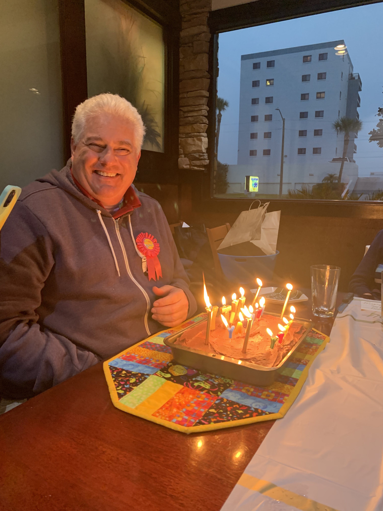
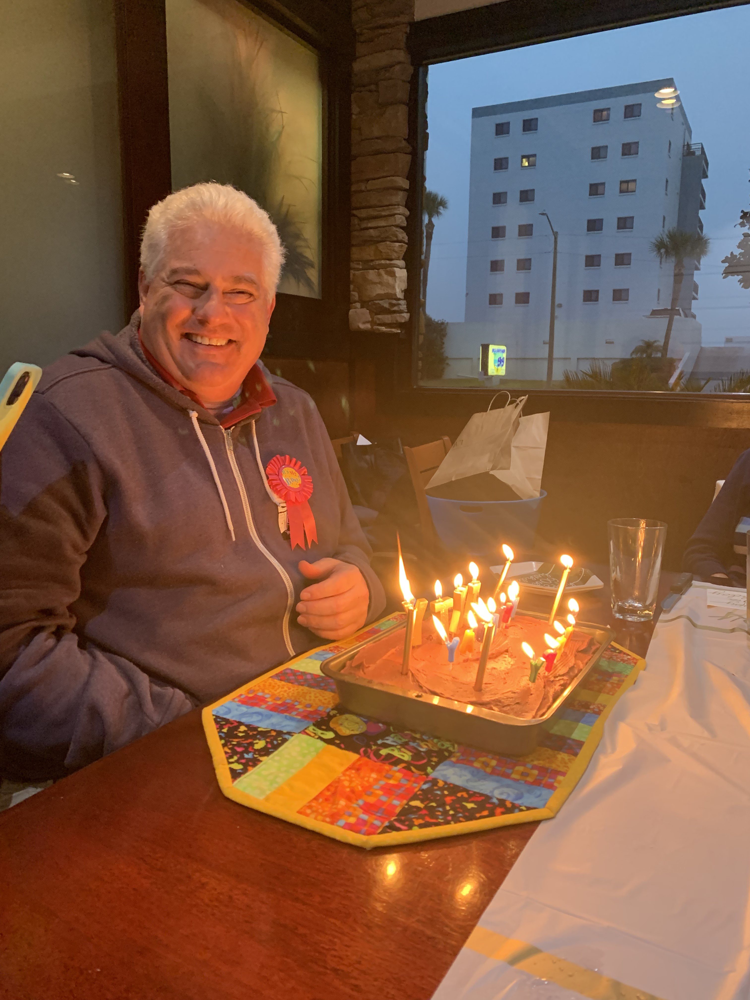

The first time I remember making Grandma's Chocolate was at my Grandma's condo in preparation for a birthday party later in the day. My Grandma provided me all the "secret" tips with how to add the coffee that adds the extra punch to the frosting, these tips that made me feel like I was entering a secret club were passed down to my Grandma by her mother, Rose.
Rose Klienerman immigrated with her family to the United States from Russia in 1920. Her family settled in Pittsburg. was active in her community and a prominient member of within the Women organization of her synagogue. Rose's husband, Sam, owned and ran a grocery store in the Pittsburg neighborhood Squirrel Hill. Early in their marriage the couple had to navigate the Great Depression, during which Rose developed this recipe for Chocolate Cake.
 

This is a true family recipe, being developed by my Great-Grandmother Rose passed on to her daughter, my Grandma, Beverly. Beverly says that it is fine that I share this recipe with you, you just must refer to it as "Grandma's Chocolate Cake." This recipe is a classic in our family and can be seen in many birthday photos!
Ingredients
Cake Batter
3 cups of flour
1 cup mayo
1.5; cup of warm water
2 teaspoon baking powder
2 cups sugar
0.5 cups cocoa powder
1 teaspoon baking soda
2 teaspoon vanilla extract
0.75 teaspoon salt
Frosting
6 tablespoons cocoa
6 tablespoon hot coffee
6 tablespoons butter
1 teaspoon vanilla extract
3 cups of powdered sugar
Directions
Preheat the oven to 350 degrees F
Grease and flour 9x13 pan
Mix all cake batter ingredients for 5 minutes
Bake cake for 45-50 minutes, until toothpick comes out of center clean.
Allow cake to fully cool before frosting, typically overnight.
For the frosting, combine the cocoa and coffee.
Add butter and vanilla extract. Beat Mixture.
Add sugar gradually, until all is mixed in.